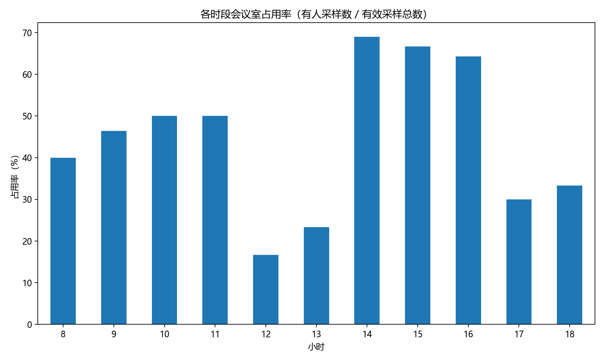
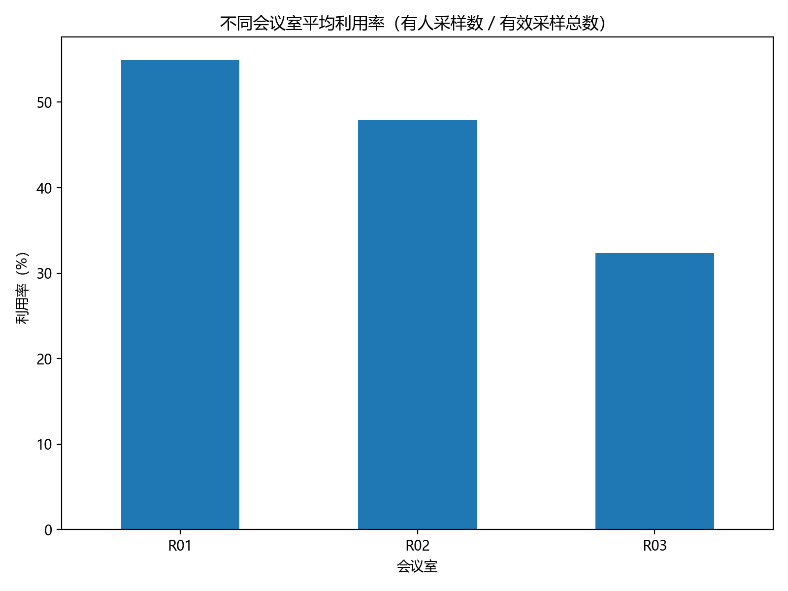
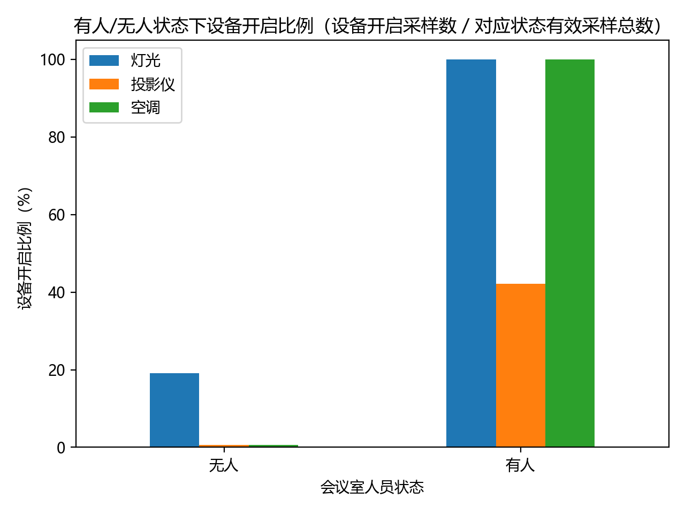

14:00 - 15:00
R01
测试样本 59 条



历史数据： 2026-09-07 至 2026-09-10，共 236 条有效记录。
测试数据： 2026-09-11，共 59 条有效记录。
预测规则： 历史同一会议室、同一小时平均占用率大于 0.5， 则预测有人，否则预测无人。
总体准确率： 61.02%
实际有人 31 条，正确预测 15 条； 实际无人 28 条，正确预测 21 条。